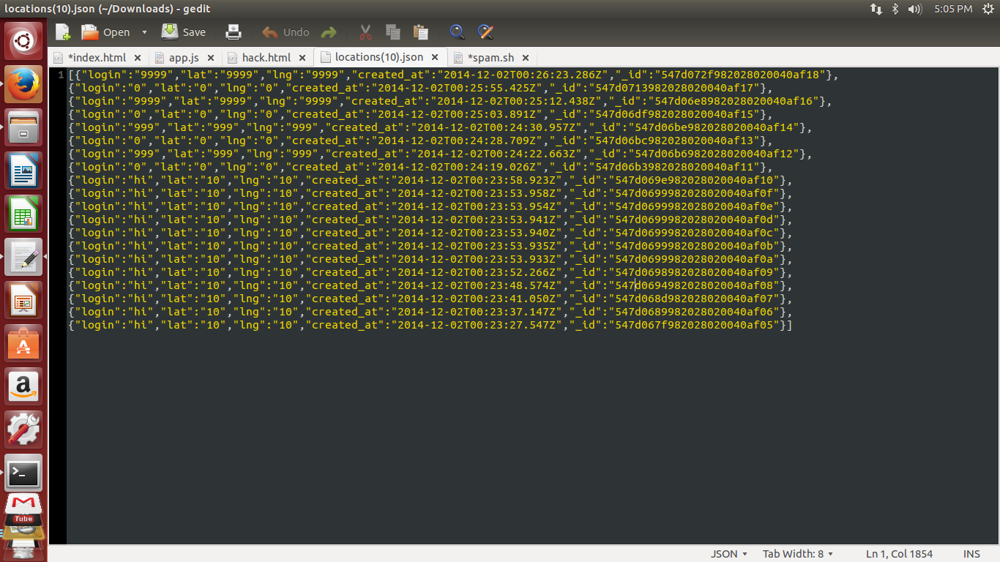

Security Assesment of Robert Ruenes' Assignments
Prepared by Maretta Morovitz • 11/30/2014
Introduction
This assessment tests the security of the web application developed by Robert Ruenes for the Comp20 assignment 4. According to the specifications of Assignment 3, his application used "Heroku, Node.js with the Express web framework, and MongoDB, to build a web application that maintains "location check-ins" (login, latitude, and longitude) for a long period of time." While all aspects of the assignment were sucessfully implemented, security vulnerabilities exist that make it unsuitable for public use. This report identifies four of those problems and suggest corrections to avoid said vulnerabilities.
Methodology
Testing was first attempted using suggestions given by Professor Ming Chow during the Comp 20 course on 11/25/2014. Tools used include curl. The code was then reviewed for additional logic errors or possible sources of vulnerabilities.
Abstract of Finding
Four key vulernabilities were identified including: Cross-Site Scripting, manual data manipulation, overloading heroku storage, and wild-card '*' domain for the Access-Control-Allow-Origin header. Each of these vulnerabilities, discussed below, presents significant sources of problems to the application by either crashing the server and rendering the application inoperable or hosting invalid data thus making the results published invalid and useless.
Issues Found
- Cross-Site-Scripting
- Affects GET functions
- Severity of Issue: HIGH. This vulnerability put the application at serious risk to attack. Becuase the user input is acceped without ever being processed or reviewed in any way, the user can send malicious input that could cripple the application. For example, in this project, running
curl --data "login=&lat=10&lng=10" https://limitless-garden-1242.herokuapp.com/sendLocation redirected the home page to a cute youtube video about Munchkin the Shih Tzu teddy bear. As can be clearly seen, this rendered the entire homepage of the application useless. And while this redirect simply showed a harmless teddy bear dog, a more malicious attack could redirect a user to a new site without the user ever realizing they had left the application they trusted. This can have serious consequencies for data security if the user enters any personal information. A second, less obvious but equally devious act is allowed through this vulnerability. The curl script enters two random latitude and longitude coordinates not based on the users actual location. Thus, a user could manipulate their position on the map and change their location to anywhere in the world. This makes the application useless as no data present in the appliaction can be trusted as legitimate.
- Proof of Vulnerability: Logging onto the application will redirect as seen in this screenshot.
- Resolution: This issue can be fixed by checking all user input before it is allowed to be accepted by the application. In regard to the latitude and longitude coordinates, one suggestion is to match coordinates with the clients IP address and only allow matching numbers. Another solution is that the coordinates could come directly from the user's IP address and remove all possibility for user manipulation. Additionally, to avoid Javascript insertions, filtering data through a whitelist of allowable characters is a good way to validate input. While no list can ever be all inclusive, it can defend against a majority of attacks and is certainly better than no filtering at all as in the current situation.
- Overloading the Heroku storage
- Affects GET functions
- Severity of Issue: Moderate. The mongo add-on for Heroku allocates 1G of storage space on heroku. The following script was able to overload the database and disable the application.
for ((i=1;i< 2; i--)); do curl --data "login=maretta&lat=10&lng=10" https://limitless-garden-1242.herokuapp.com/sendLocation; done This vulnerability can bring down the entire app, however, it is an extremely slow process. The curl script ran for over 15+ hours before finally overloading the database.
- Proof of Vulnerability: The following output was given once database reached capacity. (left photo) Trying to access the application yielded the following error. (right photo)
- Resolution: The issue can be resolved by limiting the number of allowable mongo additions per hour. This would prevent excessive spam entries from overloading the database and crashing the application.
- User Queries on Mongo
- Affects /location.json
- Severity of Issue: HIGH. All Json data was piped to a local file. The page /locations.json was intended to output all documents containing a certain search criteria. However by entering "?login=[$ne]=maretta" as part of the URL instead, all documents not equally the specified login value were displayed. This represents a serious vulnerability git to the application as anyone can run queries and manipulate what information is visible to them.
- Proof of Vulnerability: The following JSON was outputted displaying all logins not equal to "maretta", rather than all logins equal to "maretta". 
- Resolution
The mongo query should be built into the server side code rather than trusting the user input. This simple fix could prevent a serious vulnerability to the data security.
- wild-card '*' domain for the Access-Control-Allow-Origin header
- Affects POST /sendLocations & GET redline.json
- Serverity of Issue: Moderate. Setting the request header to the wildcard value lets sharing with every other origin. While this may seem harmless, in an intranet setting this could lead to data leakage snce any site can send a XHR request to the application and and access the server response.
- Proof of vulnerability: While analyzing the code, the following section displays this vulnerability clearly:
response.header("Access-Control-Allow-Origin", "*");
- Resolution: Specifiy which clients can make XHR request rather than giving blind permission to any client.
Conclusion
There are several significant vulnerabilities that must be addressed to so that malicious attacks cannot make this application inoperable and to protect the client data on the site. Additionally, by making these changes the integrity of the data can be ensured so that users cannot fake location data. This ensures that clients can trust that any data they can see is legitimate information and can be trusted. Total costs of these revisions will cost approiximatly $700 to address.